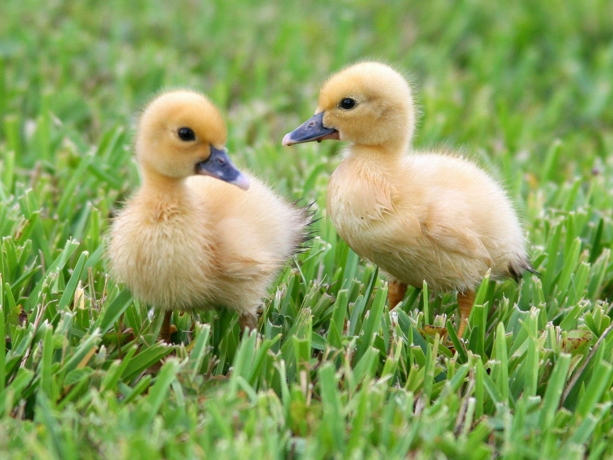
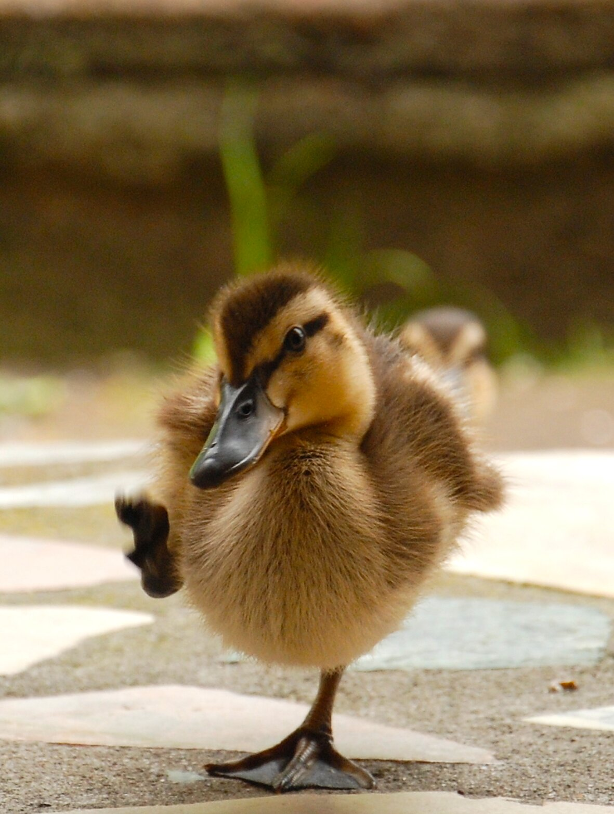

My Bestie

This is the story of me meeting my bestie for the first time! When I was young I was a prince, and heir to the throne but I never wanted to be in that position. Naturally I wanted to run away from that responsibility but my castle was surrounded by water. I prepared myself to swim away and run from my boring future. I left on a stormy night, with a pack full of money and food. My pack was too heavy for me when I jumped into the pond I started to drown. That is when I met my best friend, my bestie pulled me out of the water because he saw me from the shore. When I woke up on the shore I was so confused but I was ecstatic to be away from my terrible future. As I sat up trying to make sense of my situation I saw my future bestie sitting there watching me in confusion. "Hi, who are you?" I asked and my bestie replied, "Hello there, my name is Tailoos. I saved you from this pond. Why were you swimmming away from that castle anyway?". I laughed and said, "It is so nice to meet you! I kind of ran away from home, I don't want to be king." I shrugged and stood up, "Do you know where to get to the next town?" Tailoos laughed and showed me the way to my new home! Ever since that day I have had so much fun and I don't have to worry about being king! Tailoos and I have been through so much togther and we are the best duo out there!
